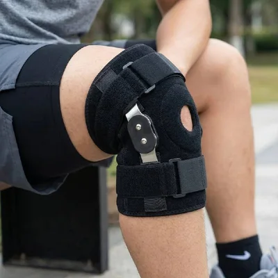
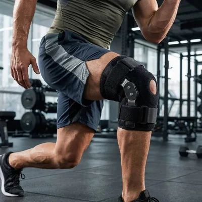
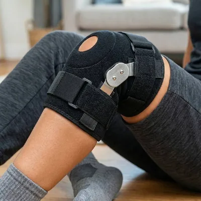
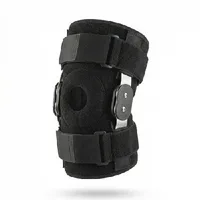
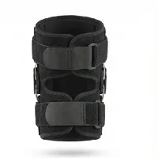
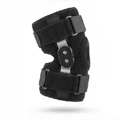
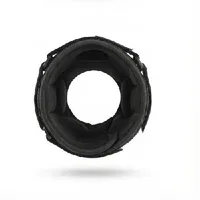
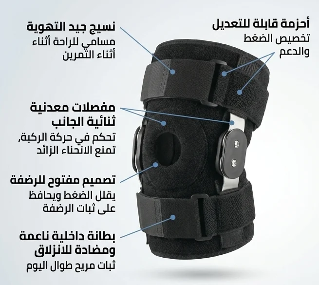
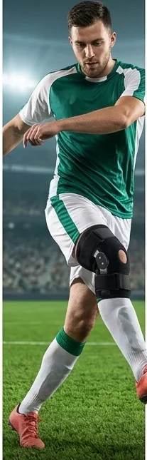
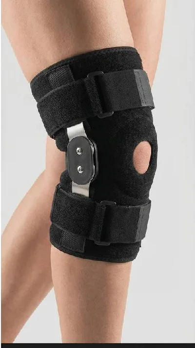

دعامات جانبية مفصلية
تصميم جانبي يساعد على دعم الركبة مع السماح بالحركة.
نتواصل معك لتأكيد الطلب
دعامة ركبة بتصميم جانبي مفصلي

دعامة ركبة احترافية بتصميم جانبي مفصلي وأحزمة قابلة للتعديل، مصممة لتوفير دعم وثبات إضافيين أثناء الحركة.


تفاصيل التصميم، كما هي على المنتج.
تصميم جانبي يساعد على دعم الركبة مع السماح بالحركة.
يمكن ضبطها للحصول على ثبات وراحة مناسبة.
خامة مصممة لتوفير راحة أفضل أثناء الاستعمال.
تصميم عملي حول منطقة الركبة.
يساعد التصميم على إبقاء الدعامة في مكانها أثناء الحركة.





هذه الدعامة مصممة لتوفير دعم خارجي للركبة ولا تُعتبر بديلاً عن الاستشارة الطبية عند وجود إصابة أو حالة صحية تستدعي ذلك.
ضع الدعامة حول الركبة في الوضع المناسب.
اضبط الأحزمة حسب راحتك.
تأكد من أنها ثابتة ومريحة قبل الحركة.
تجنب شد الأحزمة بشكل مفرط. أوقف الاستعمال إذا سبب لك المنتج ألماً أو تنميلاً أو تهيجاً.

الأداء عند الاستلام
سنتواصل معك لتأكيد الطلب
معلوماتك تُستخدم فقط للتواصل بخصوص طلبك
املأ معلوماتك وسنتواصل معك لتأكيد الطلب.
نعم، يمكن ضبط الأحزمة للحصول على مستوى مريح من التثبيت.
تصميمها مخصص لتوفير دعم إضافي للركبة مع السماح بالحركة حسب الراحة.
لا، هي دعامة خارجية مصممة لتوفير الدعم والثبات، ولا تعوض استشارة المختص عند الحاجة. اقرأ التنبيه قبل الاستعمال.
املأ الاسم ورقم الهاتف والمدينة، ثم سيتم فتح واتساب برسالة جاهزة لإتمام التواصل بخصوص الطلب.
نعم. تُعرف أيضاً باسم داعم الركبة أو مثبت الركبة. بالفرنسية Genouillère articulée هي التسمية المتداولة، وبالإنجليزية Knee Brace أو Knee Support كما تجدها في المتاجر.

املأ الاسم ورقم الهاتف والمدينة، وسنتواصل معك لتأكيد الطلب.
اطلب الآن